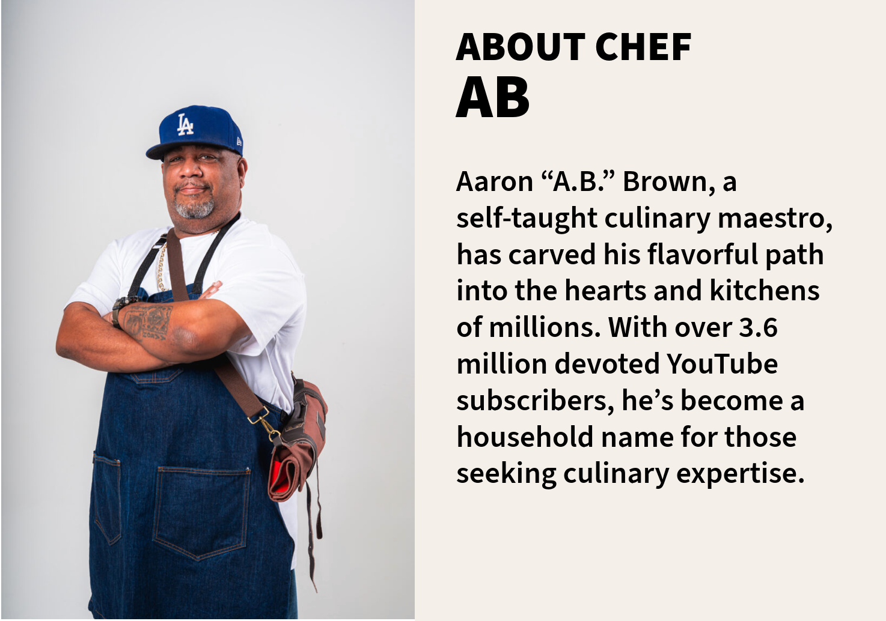

Beef and cheese hoagie sandwich

Serving: 1g
Calories: 520kcal
(click a step number to jump to that point in the video.)
Start by heating 2 tablespoons of oil in a large skillet over medium-high heat. We want that oil nice and hot before we add in the beef.
Add the 1 lb of ground beef and the finely chopped onion to the skillet. Sauté for 7-10 minutes, or until the beef is browned and the onion is soft and translucent. Sprinkle in the 2 teaspoons of McCormick's Montreal Steak Spice to give that beef an extra kick of flavor.
Toss in the chopped green bell pepper and minced garlic. Let them cook together with the beef for about 3 minutes, just enough to soften the pepper and release that wonderful garlic aroma.
Now, it's time to add the creamy element. Pour in the 1 ¼ cup of cream of mushroom soup and stir in the 2 teaspoons of Worcestershire sauce. Season with salt and pepper to taste. Stir everything together and let it cook for another 5 minutes, allowing all the flavors to meld into one delicious mixture.
Turn off the heat and fold in 1 ½ cups of grated cheddar cheese. The residual heat will melt the cheese, creating a creamy, cheesy beef mixture that's absolutely irresistible.
Spoon that cheesy beef mixture onto the hoagie rolls. Be generous—you want every bite to be packed with flavor. Serve the sandwiches warm!